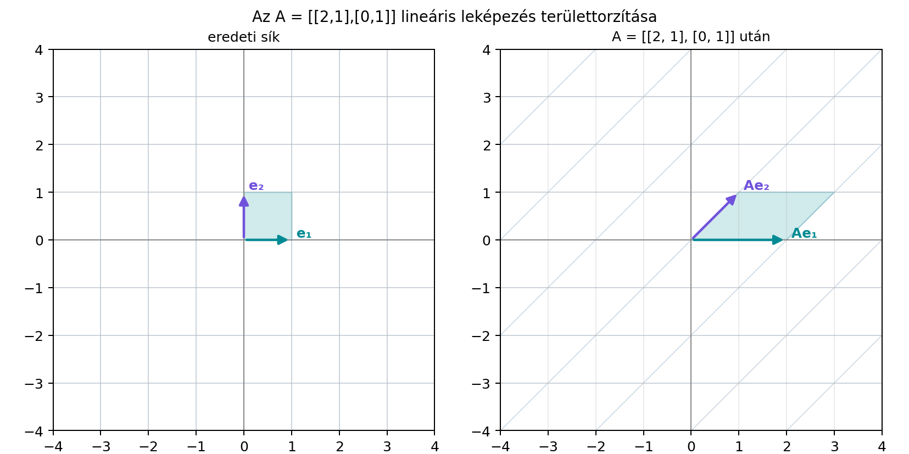

26.3 Általános változócsere és a
Jacobi-determináns
26.3.1 Motiváció
A kettős és hármas integrálok eddig megismert eszközei akkor működnek
kényelmesen, ha a tartomány téglalap, illetve téglatest alakú, vagy ha
gömb-, illetve hengerszimmetriája van. A gyakorlatban azonban gyakran
találkozunk olyan tartományokkal, amelyeket egy egyszerű alakzatból
lineáris vagy nemlineáris torzítással kapunk: elliptikus medence, ferde
oldalú lemez, nyújtott ellipszoid alakú tartály. Kérdés: ha egy
tartományt egy
leképezéssel egy egyszerűbb tartományra képezünk le, hogyan változik
meg az integrál? A válasz kulcsa a Jacobi-determináns abszolút értéke,
amely azt méri, hányszorosára nyújtja a leképezés lokálisan a területet
vagy a térfogatot.
26.3.2 Szemléletes kép: lineáris
leképezés mint területtorzítás
Vegyünk egy
-es
mátrixot:
A
lineáris leképezés az egységnégyzetet paralelogrammába viszi. Az alábbi
ábra a leképezés hatását mutatja.

Az A = ((2,1),(0,1)) lineáris leképezés
területtorzítása - Az egységnégyzet képe paralelogramma; területe |det
A| = 2.
Az egységnégyzet területe
,
a kép paralelogramma területe
,
ami éppen
Ha a determináns negatív lenne, a leképezés tükrözést is tartalmazna;
a területtorzítás mindig pozitív, ezért abszolút értéket használunk.
26.3.3 A lineáris leképezés
területtorzítása
Tétel. Legyen
egy
-es
mátrix, és legyen
,
.
Ekkor bármely korlátos, területtel rendelkező (Jordan-mérhető)
síkbeli halmaz képének területe
Bizonyítási vázlat. Először az egységnégyzetre
számoljuk ki a kép területét; az általános halmazra a végén egy
közelítéssel térünk át. Legyen
Az egységnégyzet két oldalvektora az
és
vektor. A leképezés ezeket a mátrix oszlopvektoraiba viszi:
Az egységnégyzet képe tehát az a paralelogramma, amelyet az
és
vektorok feszítenek ki. Ennek területe a két vektor vektoriális
szorzatának abszolút értéke:
Tetszőleges
oldalú, a tengelyekkel párhuzamos négyzet képe eltolt és
-szorosára
nagyított paralelogramma, területe
.
Egy területtel rendelkező
halmazt belülről és kívülről ilyen négyzetek véges uniójával közelítve,
a területek határértékéből kapjuk, hogy a
területe
.
Ha
,
akkor a leképezés bijektív. Ha
,
akkor a leképezés alacsonyabb dimenziós alakzatba nyomja a síkot, így a
kép területe
.
A háromdimenziós lineáris esetben ugyanez a gondolatmenet adja, hogy
a
-as
mátrixú leképezés a térfogatot
-szorosára
változtatja: az egységkocka képe egy parallelepipedon, amelynek
térfogata a mátrix determinánsának abszolút értéke.
Továbbvitt eredmény. A lineáris leképezés
területtorzítására vonatkozó
formula a lokális változócsere alapja. Ezt az elvet használjuk a Paraméteres felületek és felszín alfejezetben a
felszínelem kiszámításakor, valamint a Konform
leképezések és alkalmazásaik alfejezetben a komplex leképezések
lokális terület- és szögtorzításának elemzésénél.
26.3.4 A változócsere tétele
Tétel (változócsere a kettős integrálban). Legyen
mérhető, korlátos tartomány, és legyen
olyan leképezés, amelyre teljesül:
-osztályú,
azaz a parciális deriváltjai folytonosak;
bijektív a
belseje és a
belseje között (a határon nem kell egy-egyértelműnek lennie);
a
belsejében.
Elég, ha e feltételek egy nulla területű halmaz (például véges sok
görbe) elhagyása után teljesülnek. Így a polárkoordinátás csere a
téglalapon megengedett.
Ha
folytonos, akkor
ahol
A hármas integrálra vonatkozó változat teljesen analóg: ha
,
bijektív
-leképezés,
és
a
belsejében, akkor
Bizonyítási vázlat. A teljes bizonyítás meghaladja
ennek a könyvnek a kereteit, de a kulcsötlet a lineáris esetből
következik. Osszuk fel a
tartományt kis
cellákra. A
-beli
pont környezetében a
leképezést elsőrendű Taylor-közelítéssel közelítjük:
Ez azt jelenti, hogy a kis cella képét lokálisan a
lineáris leképezés viszi a
-be.
Az előző tétel szerint a cella képének területe közelítőleg
A
-beli
integrálközelítő összeg tehát olyan tagokból áll, mint
és ahogy a felosztást finomítjuk, ez a Riemann-összeg a fenti
formulához tart. A
pontok kizárása azért kell, mert ott a leképezés lokálisan
összenyomhatja a területet, és a bijektivitás sérülhet.
Az alábbi ábra egy nemlineáris leképezésen, a polárkoordinátás
leképezésen mutatja meg ezt a gondolatot: a kiemelt kis cella pontos
képe egy görbült négyszög, amely közel van a
által kifeszített paralelogrammához, és a két terület aránya a cella
finomításával
-hez
tart.
Statikus változat (mint a PDF-ben)
Egy kis cella képe közel paralelogramma, területe
(polárleképezés,
,
:
pontos terület
,
közelítés
)
Megjegyzés. Ha nem a
leképezés Jacobi-mátrixát, hanem az inverz leképezés
Jacobi-mátrixát ismerjük, akkor az inverz mátrix determinánsára
vonatkozó azonosság alapján
Ez gyakran kényelmes, például amikor az
,
típusú cseréket használunk.
26.3.5 Kidolgozott példák
1. példa – Ellipszis területe. Határozzuk meg az
ellipszis területét.
Megoldás. Vezessük be a
leképezést, ahol
az egységkör:
.
Ekkor a leképezés Jacobi-mátrixa
így
,
tehát
.
A terület:
Ellenőrzés: ha
,
akkor a képlet
,
ami a kör területe.
2. példa –
,
típusú csere. Számítsuk ki az
integrált, ahol
-t
az
,
,
,
egyenesek határolják.
Megoldás. Vezessük be az
változókat. Ekkor
,
,
tehát a
leképezés:
A
tartomány a
,
téglalap. A
Jacobi-mátrixa:
A determináns:
tehát
.
Az integrandus az új változókban
,
így
Ellenőrzés: a
paralelogramma területe
,
és az integrandus átlagos értéke
szerint valóban
-hez
vezet.
3. példa – Ellipszoid térfogata. Határozzuk meg
az
ellipszoid térfogatát.
Megoldás. Vezessük be az
leképezést, ahol
az egységgömb:
.
A Jacobi-mátrix diagonális:
Változócsere lépései kettős vagy hármas
integrálban
Rajzold le a
tartományt, és keresd meg azt a
leképezést, amely egy egyszerűbb
tartományra képezi le (például téglalapra, egységkörre,
egységgömbre).
Írd fel
-t,
vagy ha az inverz leképezés természetesebb, akkor az inverzet. Számítsd
ki a Jacobi-mátrixot
vagy
módon.
Számítsd ki
-t.
Ha az inverz leképezést használtad, alkalmazd a
azonosságot.
Helyettesítsd be az integrandust: írd fel
-t,
illetve
-t.
Állítsd össze az új integrált a
tartományon, és számítsd ki.
Ellenőrizz: hasonlítsd össze a terület/térfogat
skálázást, vagy vizsgáld meg a határesetet (például
esetén visszakapod-e a kör/gömb eredményét).
26.3.7 Valós életbeli alkalmazás:
nyújtott elliptikus medence térfogata
Egy parkban elliptikus alapú, paraboloid alakú medencét terveznek. Az
alap ellipszis féltengelyei
és
.
A medence legmélyebb pontja a középpontban
,
és a mélység a part felé haladva parabolikusan csökken:
A medence térfogata:
ahol
az ellipszis:
Megoldás. Vezessük be az
leképezést, ahol
az egységkör:
.
A Jacobi-determináns
.
A mélységfüggvény az új változókban:
Így
Térjünk át polárkoordinátákra az egységkörön:
,
,
,
,
.
Ekkor
A belső integrál:
Tehát
Ellenőrzés és értelmezés. Az elliptikus henger
térfogata
.
A paraboloid térfogata ennek éppen a fele,
,
ami megegyezik az integrálás eredményével. A medence tehát körülbelül
liter vizet tartalmaz. A modell korlátja, hogy a paraboloid fenék a
parton nulla mélységet ad, míg a valós medencéknél általában függőleges
perem és minimális vízmélység van; a fenti képlet ezért alsó becslésként
értelmezhető.
26.3.8 Tipikus hibák
Az abszolút érték elhagyása. Ha
negatív, például az
,
csere esetén
,
akkor abszolút érték nélkül negatív területet kapnánk. A terület és
térfogat mindig pozitív, ezért mindig
-t
kell írni.
Rossz irányú Jacobi-mátrix. Gyakori hiba, hogy a
hallgató a
mátrixot számolja ki, és azt helyettesíti be
helyett. A helyes mátrix a
leképezés deriváltja:
.
Ha az inverz leképezést ismerjük, akkor a determinánsok reciprok
viszonyban állnak:
.
A bijektivitás és a
feltétel figyelmen kívül hagyása. Ha a leképezés nem
egy-egyértelmű a
tartományon, vagy a determináns nulla, a formula nem alkalmazható.
Például a
leképezés az
és
részeket egymásra képezi, ezért a
téglalapra nem bijektív.
Az integrandus elhagyása térfogatszámításnál. Ha
a medence térfogatát számoljuk, akkor a
mélységfüggvényt is be kell szorozni a
mellé. Csak a
területének kiszámítása nem adja a térfogatot.
A polárkoordinátás
tényező elhagyása. A polárkoordinátás csere Jacobi-determinánsa
,
ezért
.
Ha valaki elfelejti az
-t,
az integrál értéke hibás lesz; a polárkoordináták is a változócsere
tétel speciális esetei.
26.3.9 Önellenőrzés
A
leképezés Jacobi-determinánsa mennyi? Mennyivel szorozza a
területet?
Egy
-es
mátrix determinánsa
.
Mennyi az egységnégyzet képének területe?
Igaz vagy hamis: az ellipszis területét megkapjuk, ha az egységkör
területét megszorozzuk a
értékkel.
Az
,
csere esetén mennyi
?
Milyen feltételeket kell teljesítenie a
leképezésnek a változócsere tételben?
Miért kell abszolút értéket használni a Jacobi-determináns
körül?
26.3.10 Feladatok
1. feladat (A). Legyen
Számítsd ki
-t,
és határozd meg az egységnégyzet képének területét a
leképezésnél.
2. feladat (A). Számítsd ki az
ellipszis területét a változócsere tétel segítségével.
3. feladat (B). Számítsd ki az
integrált, ahol
-t
az
,
,
,
egyenesek határolják. Használd az
,
cserét.
4. feladat (B). Határozd meg az
ellipszoid térfogatát.
5. feladat (C). Bizonyítsd be, hogy ha
egy
-es
mátrix, akkor a
lineáris leképezés az egységnégyzetet olyan paralelogrammába viszi,
amelynek területe
.
6. feladat (D). Egy elliptikus alapú, állandó
mélységű medence féltengelyei
és
,
a vízmélység
.
Számítsd ki a medence térfogatát a változócsere tételével.
7. feladat (D). Egy elliptikus paraboloid alakú
medence alapjának féltengelyei
és
,
a középponti maximális mélysége
.
A mélységfüggvény:
Számítsd ki a medence térfogatát.
26.3.11 Megoldások
26.3.11.1 Önellenőrzés –
válaszok
,
,
a területet
-szorosára
növeli.
,
tehát a kép területe
.
Igaz, mert a leképezés
,
,
így
,
és az egységkör területét
-vel
szorozzuk.
.
A leképezés legyen
,
bijektív, és a Jacobi-determináns ne legyen nulla a tartomány belsejében
(legfeljebb véges sok pont kivételével).
Mert a determináns negatív is lehet (például tükrözés esetén), de a
terület és térfogat pozitív; az abszolút érték biztosítja a helyes
pozitív szorzót.
26.3.11.2 1. feladat megoldása
.
Mivel
,
az egységnégyzet képének területe
.
(A leképezés tehát területtartó, bár az alakzatot torzítja.)
26.3.11.3 2. feladat megoldása
Legyen
,
,
ahol
az egységkör. Ekkor
,
.
A terület:
26.3.11.4 3. feladat megoldása
Az
,
csere esetén
,
.
A
tartomány:
,
.
A Jacobi-determináns:
Az integrandus:
Így
A belső integrál:
Tehát
A külső integrál:
Végül
26.3.11.5 4. feladat megoldása
Legyen
,
,
,
ahol
az egységgömb. Ekkor
A térfogat:
26.3.11.6 5. feladat megoldása
A
leképezés az egységnégyzet
és
oldalvektorait az
mátrix oszlopvektoraiba viszi. A kép tehát az a paralelogramma, amelyet
az
oszlopai feszítenek ki. A paralelogramma területe a két oszlopvektor
vektoriális szorzatának abszolút értéke, ami a
-es
mátrix determinánsának abszolút értéke. Ezért a terület
.
26.3.11.7 6. feladat megoldása
Az ellipszis féltengelyei
és
.
Vezessük be az
,
cserét, ahol
az egységkör. A Jacobi-determináns
.
A medence alapterülete:
A térfogat az állandó
mélységgel:
26.3.11.8 7. feladat megoldása
Az
,
,
paraméterekkel az
,
cserét alkalmazzuk, ahol
az egységkör. A Jacobi-determináns
.
A mélységfüggvény:
A térfogat:
Polárkoordinátákra áttérve
,
és
26.3.12 Rövid összefoglaló
A változócsere tétele azt mondja ki, hogy ha
bijektív
-leképezés,
és a Jacobi-determináns nem nulla a
belsejében, akkor
illetve hármas integrálra analóg módon
A
tényező a lineáris leképezés területtorzításából származik: egy
-es
mátrixú lineáris leképezés az egységnégyzetet
területű paralelogrammába viszi. A változócsere tétel lokálisan ezt a
lineáris közelítést alkalmazza minden kis cellára. A tétel hasznos
eszköz elliptikus, paralelogramma és egyéb nem szabványos tartományok
integrálására; például az ellipszis területe
,
az ellipszoid térfogata
.
A továbbvitt eredmények: a változócsere formula és a
mint torzítási tényező közvetlenül szükséges a Paraméteres felületek és felszín alfejezet
felszínelemeinek és a Konform leképezések és
alkalmazásaik alfejezet lokális torzítási számításainak
megértéséhez.
26.3.13 Források és ellenőrzési
hiányok
A változócsere tétele a többváltozós analízis klasszikus eredménye,
amely megtalálható a standard tankönyvekben (például Stewart, Thomas,
Marsden–Tromba, Laczkovich–T. Sós). Oldalszámot vagy tételszámot nem
adok meg, mert azok kiadásonként eltérnek. A fejezet
forráskiindulópontjai az OpenStax Calculus Volume 3, az MIT OCW 18.02SC
és a Paul’s Online Notes; ezeket oldalszinten nem ellenőriztem, a fenti
tárgyalás a klasszikus matematikai tartalmat követi.